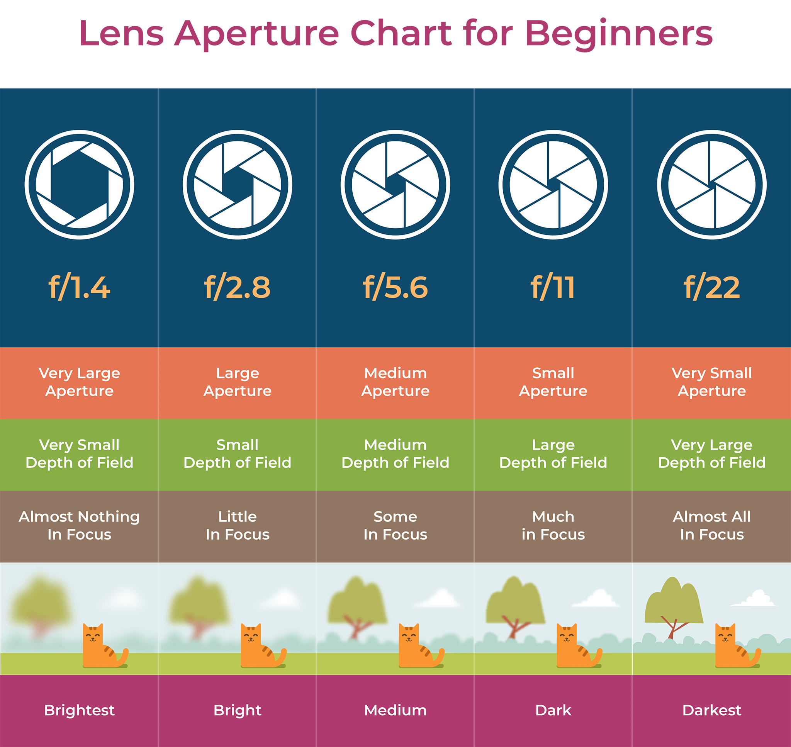
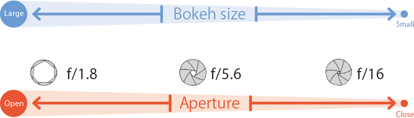
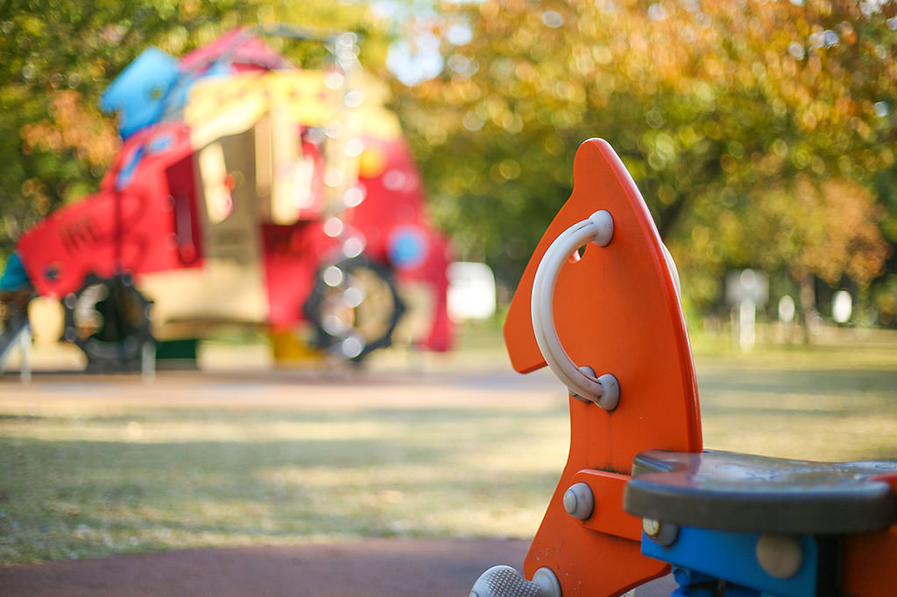
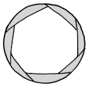
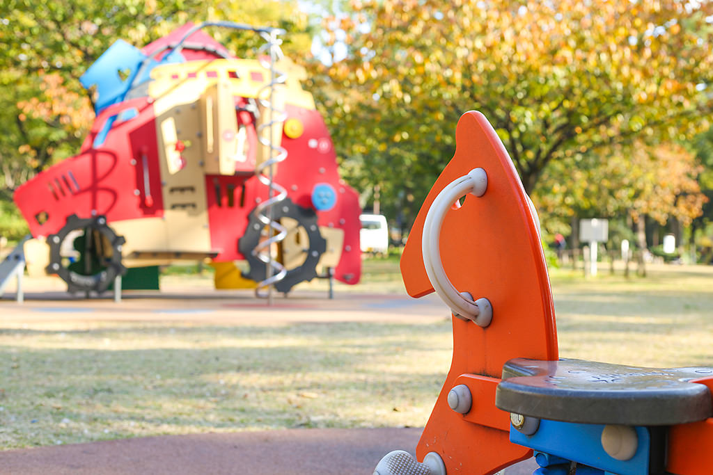
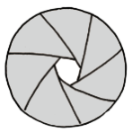
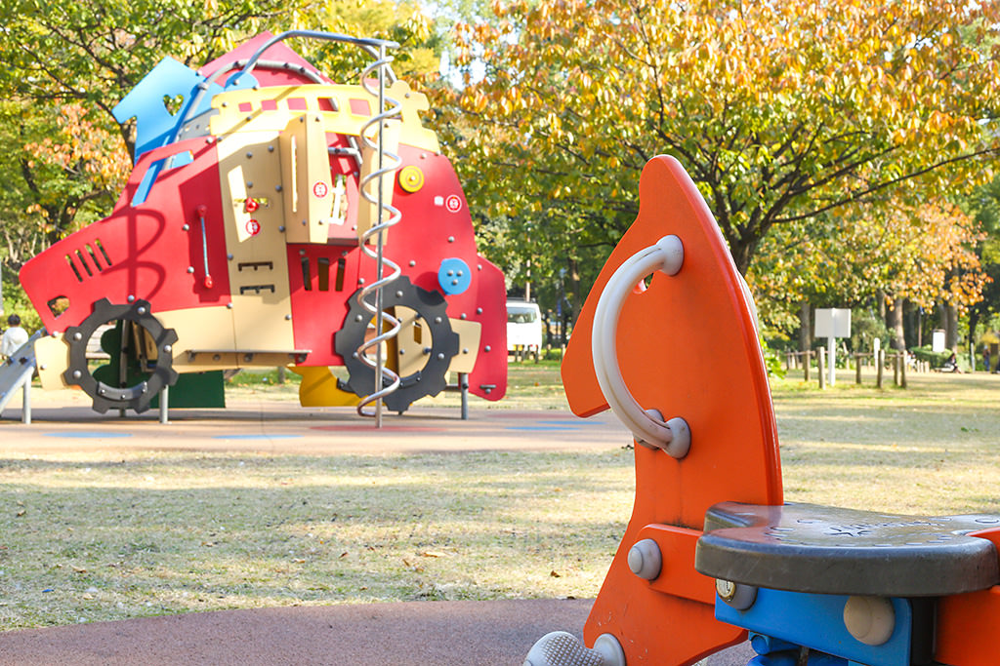
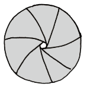
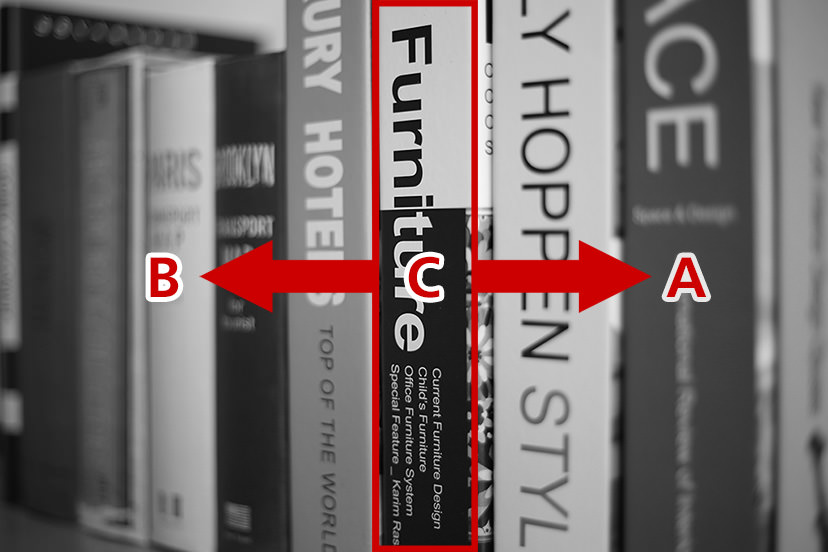
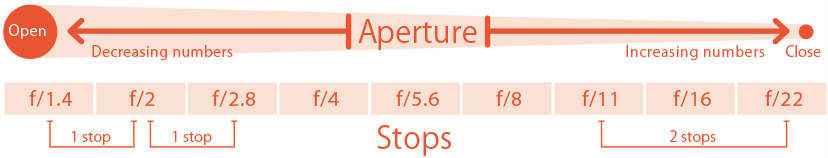

Photography Basic | Part 1
Aperture
The first thing to consider when taking photographs with a digital camera is the effect that the aperture can have on your pictures. How will the photograph finish change depending on the aperture is widened or narrowed? In this article, we study the effects of varying apertures on depth-of-field by comparing several examples, and learn about the concept of f-stops.

The aperture controls the amount of light entering the lens
Points-to-note
-The larger the aperture (i.e. the smaller the f-number), the larger the bokeh.
-The smaller the aperture (i.e. the larger the f-number), the larger the area in-focus (depth-of-field).
-The amount of light that enters The sensor can be controlled by widening/narrowing The aperture.
The aperture allows us to control the amount of light entering the lens. When the aperture is widened, more light can enter, and conversely, when the aperture is narrowed, less light can enter the lens. The numerical values of the difference in aperture size is known as the f-number. The standard f-numbers are: f/1.4, f/2, f/2.8, f/4, f/5.6, f/8… etc. Widening the aperture reduces the f-number whereas narrowing the aperture increases it.
When the f-number changes, it is not only the amount of light entering the camera that changes, but also the size of area in the image that appears in focus. The smaller the f-number, the smaller the image area in focus. Conversely, the larger the f-number, the larger the image area in focus. The latter results in a photo that is sharp all the way to the background.
At the smallest f-number, you achieve “maximum aperture”. This allows the greatest amount of light possible to enter, and is also when you can achieve the most prominent ("biggest") bokeh.
Modifying the range of area-in-focus by adjusting the aperture
 EOS 5D Mark III/ EF50mm f/1.8 STM/ FL: 50mm/ Aperture-priority AE (f/1.8, 1/800sec., EV+0.7)/ ISO 100/ WB: Manual
f/1.8
EOS 5D Mark III/ EF50mm f/1.8 STM/ FL: 50mm/ Aperture-priority AE (f/5.6, 1/80sec., EV+0.7)/ ISO 100/ WB: Manual
f/5.6
EOS 5D Mark III/ EF50mm f/1.8 STM/ FL: 50mm/ Aperture-priority AE (f/16, 1/40sec., EV+0.7)/ ISO 400/ WB: Manual
f/16
Concept 1: Depth of Field
The bokeh also gets more prominent the closer the focusing distance. The range of focus (how much of the image is in focus) is known as the “depth of field”. When this range is small, it is known as a “shallow depth of field”. Likewise when the range is large, this is a “deep depth of field”.
EOS 5D Mark III/ FL: 50mm/ Aperture-priority AE (f/1.8, 1/80sec., EV+0.7)/ ISO 100/ WB:
Auto
Shallow depth of field f/1.8
EOS 5D Mark III/ FL: 50mm/ Aperture-priority AE (f/16, 1/40sec., EV+0.7)/ ISO 4000/ WB:
Auto
Deep depth of field f/16
EOS 5D Mark III/ FL: 50mm/ Aperture-priority AE (f/16, 1/40sec., EV+0.7)/ ISO 4000/ WB:
- Foreground depth of field
- Background depth of field
- Focus position
Expressing as a ratio the distance from the focus position to the foreground depth of field, to the distance from the focus position to the background depth of field, the focus ratio is said to be 1:2 foreground: background.
Concept 2: The relationship between aperture and f-stops.
Exposure settings, also commonly referred to by photographers as “f-stops,” allow you to adjust the amount of light that enters the camera. These settings are also known as the “EV”, or exposure value. Increasing the aperture by 1 stop halves the amount of light entering the camera. Conversely, decreasing it by 1 stop doubles the amount of light entering the camera. For most DSLR cameras, in addition to the standard 1 stop, you can also set stops at 1/2 and 1/3 intervals. For example, if you set a 1/3 stop, the range of a full stop between f/2.8 to f/4 is divided into 3 parts, so it becomes f/2.8→f/3.2→f/3.5→f/4. The use of 1/3 stops allows finer adjustments to be made to the amount of light entering the camera.